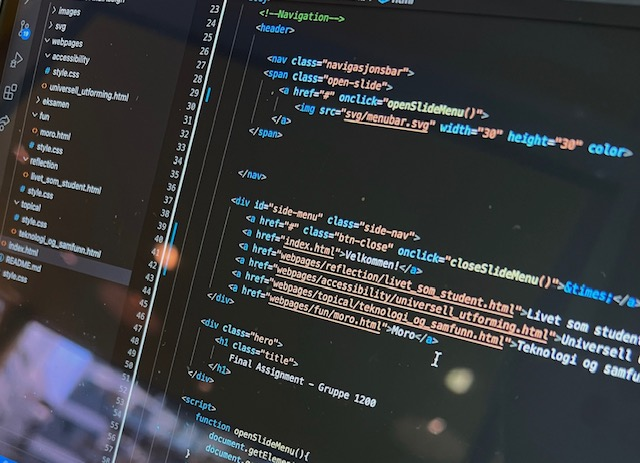

<!DOCTYPE html>
<html lang="no"></html>
<html>
<head>
    <meta charset='utf-8'>
    <meta http-equiv='X-UA-Compatible' content='IE=edge'>
    <meta name='viewport' content='width=device-width, initial-scale=1'>
    <!--Metadata-->
    <title>Final Assignment DATA1200 - Reflection</title>
    <meta name="author" content="Gruppe 1200">
    <meta name="description" content="Reflection">
    <!--Styles and Scripts-->
    <link rel='stylesheet' type='text/css' media='screen' href="refle-style.css">
    
</head>
    <!--Navigation-->
    <header>
       
        <nav class="navigasjonsbar">
        <span class="open-slide">
            <a onclick="openSlideMenu()">
                
            </a>
        </span>

        
        </nav>

        <div id="side-menu" class="side-nav">
            <a class="btn-close" onclick="closeSlideMenu()">&times;</a>
            <a href="../../index.html">Velkommen!</a>
            <a href="livet_som_student.html">Livet som student</a>
            <a href="../accessibility/universell_utforming.html">Universell utforming</a>
            <a href="../topical/teknologi_og_samfunn.html">Teknologi og samfunn</a>
            <a href="../fun/moro.html">Moro</a>
        </div>
        
        <div class="hero" tabindex="0">
            <h1 class="title">
                Livet som student
            </h1>
        </div>

    </header>

    <!--Main-->
    <main>
        <article>
            <div class="student" tabindex="0">
                <!--Innholdet deles opp i ulike deler og brukes i grid-layout-->
                <div class="student-tittel"><h2>Hvordan det var å lære<br> og kode </h2></div>
                <div class="img-container"></div>
                <div class="parag1"><p>Første året på studier kan være tøft, uansett hvilken linje man går på.  Få av IT – studentene har hatt koding eller programmeringen før studiene og dette 
                    gjør derfor at mange kanskje føler seg usikre på linjen de har begynt på. En enkel huskeregel er at koding og programmering er mer eller mindre som fremmedspråkene du lærer i
                    løpet av årene med grunnskole. Det er lett å bli skremt når man åpner programmeringsboken for første gang, eller ser en av de obligatroiske oppgavene. Men ta det helt med ro, for dine 
                    medstudenter føler akkurat det samme. Programmering består av mange ord, utrykk og tegn, disse kommer fra et programmeringsspårk som heter Java - som er det mest brukte programmeringsspråket 
                    i verden! Med Java kan du lage nettsider, spill og masse mer. </p></div>
                <div class="parag2"><p>
                    Siden studiet består av mye selvstendig arbeid, er det ekstra viktig å spørre om hjelp , og ikke minst benytte seg av øvingstidene som er satt opp. Her er det flere 2. og 3. års studenter som går samme linje som kan hjelpe deg med det du trenger hjelp til. 
                    Ettersom at du kun har fire fag hvert semester, er det lettere å sette seg inn i de fagene du har og dermed er det å lære seg koding ikke like vanskelig som man kanskje frykter. Men du er avhengig av å følge forelseninger og 
                    gjøre de forarbeidene foreleseren anbefaler å gjøre. I programmering har man et nytt tema hvert uke, dette gjøre det ekstra viktig å følge med og gjøre det man skal, 
                    for det skal ikke mye til for å henge langt etter. Koding i Web utvikling og interaktivt design er litt enklere, i alle nettsider har du en HTML grunnmur som du bygger ut i fra. I Web utvikling og interaktivt design har man i tillegg CSS. 
                    CSS er et spårk som brukes til å definere utseende på nettsiden. Her kan du blant annet bestemme farger, skriftstørrelse og skrifttype. Det morsomme med CSS er at man lærer mye av å prøve og feile. De obligatoriske oppgavene skal ofte leveres 
                    i grupper. Dette gir deg muligheten til å lære og se løsninger som man selv kanskje ikke ser.</p></div>
              </div>
        </article>
        <article>
            <div class="god-student" tabindex="0">
                <div class="god-tittel"><h3>Hvordan å være en god student </h3></div>
                <div class="god-student-text"></div>
                <p> Det å være en første års student er noe man ikke kan forberede seg godt nok på. 
                        En av de største forandringene fra videregående til universitet er å ikke lenger sitte i et klasserom med tretti medelever som du kjente godt. 
                        Nå går du en linje sammen med firehundre andre, hvor det å skape vennskap ikke er like lett som vi er vant til. 
                        De første ukene er skremmende for de fleste, den trygge klassen du er vant til fra grunnskole er ikke der lenger, i stedet leser du firehundre ukjente navn på en liste, der halvparten av disse kan det hende du aldri ser. 
                        Det viktigste man kan gjøre i en slik situasjon er å huske at alle er i samme båt. Ta initiativ, det verste du kan få er et nei, og det er jo egentlig ikke så ille det heller. 
                        For mange er det skummelt å ta initiativ, selvfølgelig er det det! Men husk, de firehundre medstudentene dine kommer fra hele Norge. 
                        Kanskje de ikke kjenner en eneste person i Oslo, kanskje du kan være den som hjelper de til å bli vant til livet i Oslo. 
                        Vennene du får på universitet er ofte de du har for resten av livet. Dine tre eller fem år på universitet kommer til å gå overraskende fort.  Derfor er det viktig å nyte den tiden man har, 
                        kose seg mest mulig og sammen med nye mennesker, som kanskje blir dine nærmeste venner ut livet.<br>
                        
                        <br> For å bli en god student er det viktig at du tidlig setter deg gode rutiner som du vet du vil klare å gjennomføre. Forelesningene kan foregå både digitalt og i forelesningssaler, man har derfor store muligheter til å planlegge dagen slik 
                        man selv ønsker. Men det er viktig å huske at du bør følge anbefalt arbeidsmengde i løpet av en uke, hvor mye man bør jobbe med faget blir som regel foreslått av foreleser i  
                        starten av semesteret. God studietekninkk er også essensielt for et godt resultat, så ta en runde med deg selv før du starter å studere og tenk etter: hvordan lærer jeg best? Er det ved å lese, høre på 
                        foreleser og notere, arbeide med oppgaver eller å se på videoer som forklarer temaet? Studieteknikk avhenger fra person til person, det som funker for deg funker kanskje ikke for venninnen eller kompisen din, 
                        og det som funker for de, funker kanskje ikke for deg. Bruk forelesere, studentassistenter, medstudenter og øvingstimene godt. For mest sannsynlig er det noen som har svarene du trenger!</p>    
            
                    </div> 
                </div>
        </article> 
        <article>
            <div class="arbeidsmengde" tabindex="0">
                <div class="arbeid-tittel"><h4>Hvordan takle arbeidsmengden </h4></div>
                <div class="arbeid-img-container"></div>
                <div class="arbeid-parag1">
                <p>  Største forandringen fra videregåendeskole til universitetet, er at du er mye mer selvstendig. 
                 På videregående gikk læreren over alt innhold du skulle lære, du hadde obligatorisk oppmøte og måtte ha prøver en gang i måneden. 
                 På universitetet derimot er det ikke obligatorisk oppmøte, dette kan varierer fra univeristet til universitet, du har obligatoriske oppgaver som du selv må sørge for å levere innen fristen. 
                 De obligatoriske oppgavene må bestås for at du kan ta eksamen. Som student går mye av tiden til selvstudie. Du bestemmer derfor selv hvordan du ønsker å jobbe med faget. 
                 Det eneste som følges opp er om du leverer de obligatoriske oppgavene. Alle de obligatoriske oppgavene i første semester annbefales å gjøres i grupper av faglærer, og i noen av fagene er det obligatorisk å samarbeide med andre.  
                 Du får derfor en gylden mulighet til å bli kjent med dine medstudenter. Fordelingen innad i gruppen bestemmer dere selv og manfår derfor mulighet til å fordele arbeidsmengden på best mulig måte. </p>
                </div>
            </div>
        </article>
    </main>

    <!--"Gå til topps"-knapp med funksjon "goTop()"-->
    <button onclick="goTop()" id="go_top" title="Go to the top"></button>
    
    <!--Footer-->
    <footer>
        <div class="footer">
        <p>Gruppe 1200 @ 2021</p>
        </div>
    </footer>

    <!--Scripts-->
    <script>
        function openSlideMenu(){
            document.getElementById('side-menu').style.width="100%";
            
        }
        function closeSlideMenu(){
            document.getElementById('side-menu').style.width="0%";
            
        }

        function goTop(){
            document.body.scrollTop = 0;
            document.documentElement.scrollTop = 0;
        }
    </script>
</body>
</html>